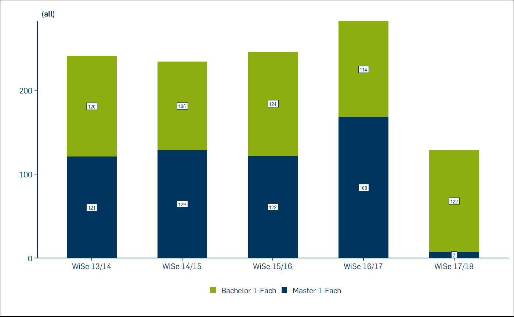
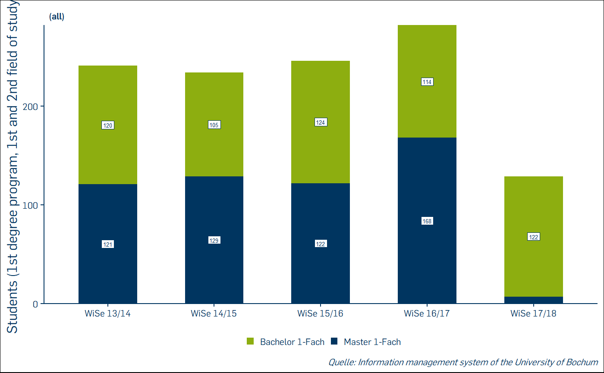
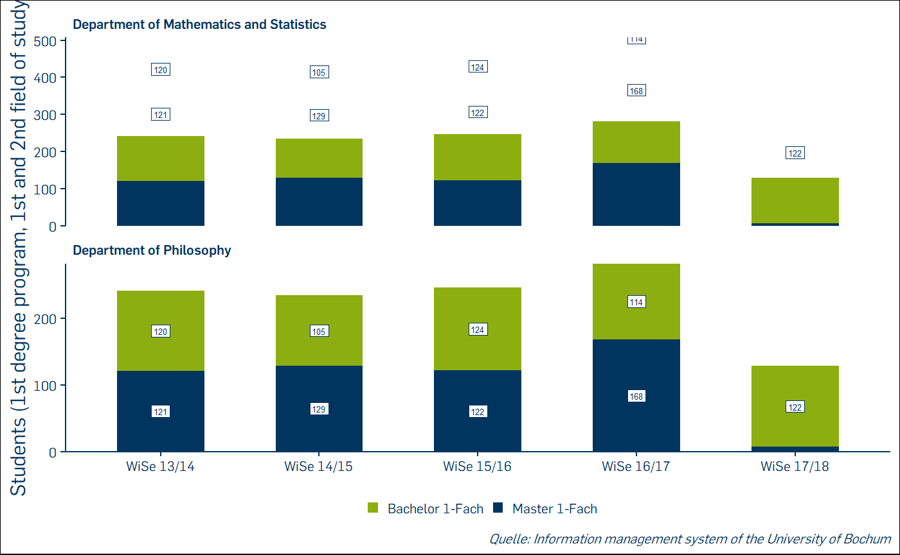

library(RUBer)
library(extrafont)
#> Registering fonts with R
df_typ_1 <- df_fake %>%
dplyr::filter(
report_nr == 1 &
figure_count == 1 &
figure_type_id == 1
)
df_typ_1 <- RUBer::set_factors(df_typ_1)
df_typ_1 <- df_typ_1 %>%
dplyr::select(
x,
y,
y_label,
fill,
fill_label,
source_caption
)The plotting functions in RUBer do not in any way extend the functionality provided by ggplot2 itself. By preconfiguring a lot of the details, they are meant to be more accessible and easier to use. One of the inspirations for this was the bbplot package used by the BBC News data team.
Available figure types:
For plotting vertical stacked bar charts, three variables are mandatory: the x- coordinate, the y-coordinate and the fill variable, which determines the groups to be stacked. Consider this example:
# Create test values for all three mandatory variables. In this case, fill,
# which determines the groups to stack by, is the degree.
df_type_1 <- tibble::tribble(
~x, ~y, ~fill,
"WiSe 13/14", 120, "Bachelor 1-Fach",
"WiSe 14/15", 105, "Bachelor 1-Fach",
"WiSe 15/16", 124, "Bachelor 1-Fach",
"WiSe 16/17", 114, "Bachelor 1-Fach",
"WiSe 17/18", 122, "Bachelor 1-Fach",
"WiSe 13/14", 121, "Master 1-Fach",
"WiSe 14/15", 129, "Master 1-Fach",
"WiSe 15/16", 122, "Master 1-Fach",
"WiSe 16/17", 168, "Master 1-Fach",
"WiSe 17/18", 7, "Master 1-Fach",
)
rub_plot_typ_1(
df = df_type_1,
x = x,
y = y,
fill = fill
)
Next a more complex example, in which we additionally provide the label for the y-axis, y_label and a caption indicating the source of the data, caption. We also want to suppress the value label for Master students in the winter term 2017/18, because the value is so small. By default, labels for values accounting for less than 4% of the total value are suppressed. In this case, the five students account for 7/(7+122) = 5.4% of the total value, so we increase the value for filter_cutoff from the default of 0.04 to 0.06.
df_type_1 <- tibble::tribble(
~x, ~y, ~fill,
"WiSe 13/14", 120, "Bachelor 1-Fach",
"WiSe 14/15", 105, "Bachelor 1-Fach",
"WiSe 15/16", 124, "Bachelor 1-Fach",
"WiSe 16/17", 114, "Bachelor 1-Fach",
"WiSe 17/18", 122, "Bachelor 1-Fach",
"WiSe 13/14", 121, "Master 1-Fach",
"WiSe 14/15", 129, "Master 1-Fach",
"WiSe 15/16", 122, "Master 1-Fach",
"WiSe 16/17", 168, "Master 1-Fach",
"WiSe 17/18", 7, "Master 1-Fach",
)
y_label = "Students (1st degree program, 1st and 2nd field of study)"
source_caption = "Information management system of the University of Bochum"
filter_cutoff = 0.06
rub_plot_typ_1(
df = df_type_1,
x = x,
y = y,
y_label = y_label,
fill = fill,
caption = source_caption,
filter_cutoff = filter_cutoff
)
df_type_1 <- tibble::tribble(
~x, ~y, ~fill, ~facet,
"WiSe 13/14", 120, "Bachelor 1-Fach", "Department of Mathematics and Statistics",
"WiSe 14/15", 105, "Bachelor 1-Fach", "Department of Mathematics and Statistics",
"WiSe 15/16", 124, "Bachelor 1-Fach", "Department of Mathematics and Statistics",
"WiSe 16/17", 114, "Bachelor 1-Fach", "Department of Mathematics and Statistics",
"WiSe 17/18", 122, "Bachelor 1-Fach", "Department of Mathematics and Statistics",
"WiSe 13/14", 121, "Master 1-Fach", "Department of Mathematics and Statistics",
"WiSe 14/15", 129, "Master 1-Fach", "Department of Mathematics and Statistics",
"WiSe 15/16", 122, "Master 1-Fach", "Department of Mathematics and Statistics",
"WiSe 16/17", 168, "Master 1-Fach", "Department of Mathematics and Statistics",
"WiSe 17/18", 7, "Master 1-Fach", "Department of Mathematics and Statistics",
"WiSe 13/14", 120, "Bachelor 1-Fach", "Department of Philosophy",
"WiSe 14/15", 105, "Bachelor 1-Fach", "Department of Philosophy",
"WiSe 15/16", 124, "Bachelor 1-Fach", "Department of Philosophy",
"WiSe 16/17", 114, "Bachelor 1-Fach", "Department of Philosophy",
"WiSe 17/18", 122, "Bachelor 1-Fach", "Department of Philosophy",
"WiSe 13/14", 121, "Master 1-Fach", "Department of Philosophy",
"WiSe 14/15", 129, "Master 1-Fach", "Department of Philosophy",
"WiSe 15/16", 122, "Master 1-Fach", "Department of Philosophy",
"WiSe 16/17", 168, "Master 1-Fach", "Department of Philosophy",
"WiSe 17/18", 7, "Master 1-Fach", "Department of Philosophy"
)
y_label = "Students (1st degree program, 1st and 2nd field of study)"
source_caption = "Information management system of the University of Bochum"
filter_cutoff = 0.06
RUBer::rub_plot_typ_1(
df = df_type_1,
x = x,
y = y,
y_label = y_label,
fill = fill,
caption = source_caption,
filter_cutoff = filter_cutoff,
facet_var = facet
)
library(ggplot2)
library(rlang)
mpg
plot_mpg(NULL, facet_var = trans)
plot_mpg <- function(colour_var, facet_var) {
mapping <- aes(displ, hwy, colour = .data[[colour_var]])
if (is.null(colour_var)) {
mapping$colour <- NULL
}
if (is.null(facet_var)) {
facet <- NULL
} else {
facet_var <- enquo(facet_var)
facet <- facet_wrap(vars(!!facet_var))
}
ggplot(mpg) +
geom_point(mapping) +
facet
}